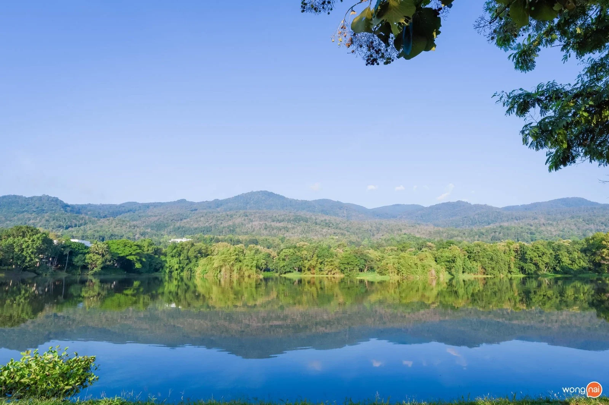
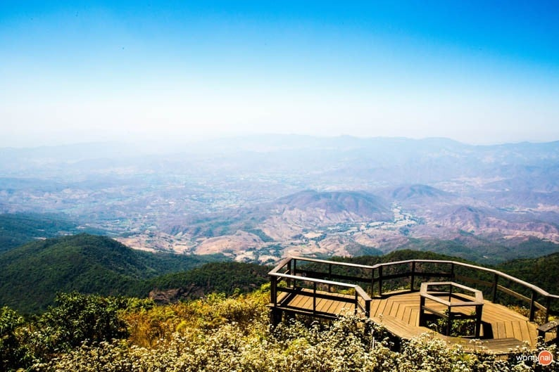

สถานที่ท่องเที่ยวธรรมชาติ
อ่างเก็บน้ำห้วยลาน

เป็นอ่างเก็บน้ำในพระราชดำริของในหลวงรัชกาลที่ 9 ตั้งอยู่ในอำเภอสันกำแพง ไปทางเดียวกับวัดป่าตึงเลยไปอีกนิดเดียว บรรยากาศดี วิวสวย เหมาะสำหรับมาพักผ่อนหย่อนใจ เช่น วิ่ง ปั่นจักรยาน หรือตกปลาก็ได้เช่นกัน
ที่ตั้ง ตำบลออนใต้ อำเภอสันกำแพง
อัตราค่าเข้า:ฟรี
ม่อนแจ่ม

แนะนำให้มาช่วงต้นเดือน พ.ย - ม.ค เพราะจะเป็นช่วงที่ดอกไม้กำลังบานสะพรั่ง สวยงาม ที่จะไม่พลาดกับการไปถ่ายรูปกับดอกเวอร์บีน่าสีม่วงที่ชูช่อสวยๆ นอกจากที่เที่ยวม่อนแจ่มมีที่พักและรีสอร์ทเปิดให้บริการมากมายให้ได้สัมผัสธรรมชาติอย่างใกล้ชิด
เปิด-ปิดเวลา : 06.00-18.00 น.
ที่ตั้ง: ตำบลแม่แรม อำเภอแม่ริม จังหวัดเชียงใหม่
อ่างแก้ว

"อ่างแก้ว" อ่างเก็บน้ำขนาดใหญ่ในมหาวิทยาลัยเชียงใหม่ สำหรับนั่งชิล ถ่ายรูป เช็กอินและชื่นชมความสวยงามของพระอาทิตย์ที่กำลังขึ้นหรือลับลาขอบฟ้า
ที่ตั้ง:ถนน นครพิงค์ เชียงใหม่ จากหน้ามหาวิทยาลัยเชียงใหม่ เมื่อขับตรงมาจนเจอสามแยกศาลพระภูมิให้เลี้ยวไปทางขวา สุดถนนก็จะเป็นอ่างแก้ว
เปิด-ปิดเวลา : วันอาทิตย์ 05.00 น. - 22.00 น.
ฤดูกาลแนะนำ : ทุกฤดูกาล
ช่วงเวลาที่ดีที่สุด :17.00 - 19.00 น.
อัตราค่าเข้า ฟรี
เส้นทางศึกษาธรรมชาติกิ่วแม่ปาน

ใช้เวลาประมาณ6นาทีจากดอยอินทนนท์ขับมาตามทางหลวงหมายเลข1009 หรือใครอยากเดินสามารถเดินเลาะลงมาตามแนวเขาประมาณ 1 ชั่วโมงก็จะพบกับ"เส้นทางศึกษาธรรมชาติกิ่วแม่ปาน"สถานที่ท่องเที่ยวเชียงใหม่ที่เต็มไปด้วยต้นไม้ ดอกไม้ป่า และสิ่งมีชีวิตขนาดเล็กอย่างเช่น นก กระรอก ที่จะโผล่มาทักทายนักท่องเที่ยวบ้างเป็นครั้งคราว ไปต่อกันที่แหล่งเพาะพันธ์ุไม้เมืองหนาวที่อยู่ไม่ไกล ขับรถเพียง 18 นาทีก็ถึง
ที่ตั้ง: อยู่บริเวณกิโลเมตรที่ 43 ของถนนสายจอมทอง-ยอดดอยอินทนนท์ ใกล้กับพระมหาธาตุนภเมทนีดล และพระมหาธาตุนภพลภูมิสิริ
เปิด-ปิดเวลา : ทุกวัน 08.30 น. - 16.30 น.
ฤดูกาลแนะนำ : มกราคม - มีนาคม
ช่วงเวลาที่ดีที่สุด :6.00 - 9.00 น.
อัตราค่าเข้า ฟรี (เสียจากทางเข้าดอยอินทนนท์)